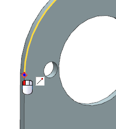
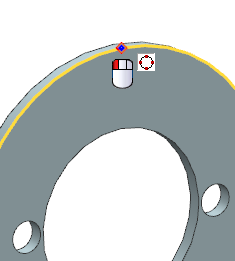
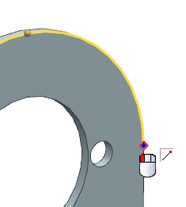
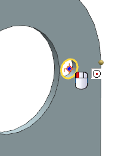
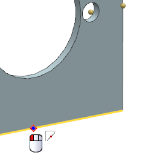
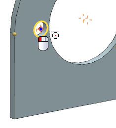
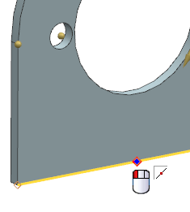
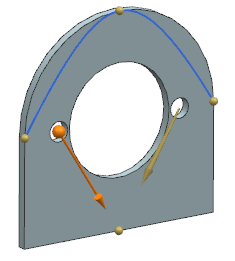
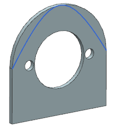

Open des18_85_general_conic.
Choose Insert→Curve→General Conic.
You will create a conic curve on the planar face of the solid body.
In the General Conic dialog box, from the Type list, select 3 Points, 2 Slopes.
For the Specify Start Point, select the start point of the large arc as shown.

For the Specify Interior Point, select the top quadrant point of the arc as shown.

For the Specify End Point, select the end point of the arc as shown.

From the Specify Start Slope list, select Two Points to define a vector direction.
Select the arc center of the small hole on the right side of the solid body for the start point of the start slope vector.

Select the mid-point of the bottom edge of the solid body for the end point.

From the Specify End Slope list, select Two Points to define the vector direction.
Select the arc center of the small hole on the left side of the solid body for the start point of the end slope vector.

Select the mid-point of the bottom edge of the solid body for the end point.

A preview of the conic curve appears.

Click OK to create the conic curve.
